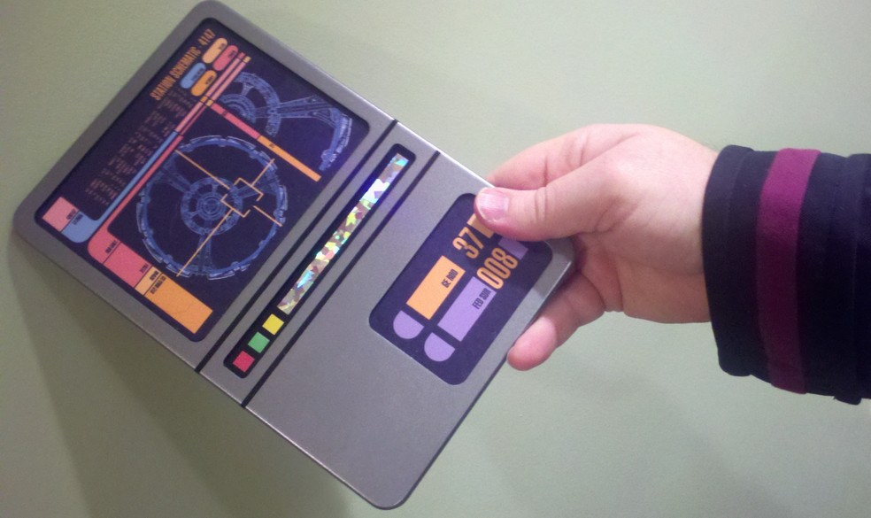

Enterprise Grade
Accessibility for
Everybody
Don’t #@!%
the customer
the customer
- list of tools in approximately the order you would use them - some
of these tools are publicly available and you can just start using
them directly (most of even free) - some of them are amalgamations
of different tools - you'll need to work you what combination you
need for your use case - some are specific things we've built
in-house, but i've included them because the idea scales outside of
atlassian mention that i'm focussing on the dev side of things, but
that accesibility starts with design
accessiblity support portal questions are routed directly to our
central a11y team, so the customer is immediately speaking to
someone who understands things like how to use a screen reader
tickets have a11y-specific SLOs
-
a11y-annotate
-
a11y-assist
-
a11y-foundation
-
a11y-pr-review
Background photo of a crew member vacuuming the bridge of the
starship Enterprise from Star Trek.
Linting
tests
Accessibility Test Coverage
Automating axe-core tests
afterEach(() => {
expect(document.body).toBeAccessible()
})
98%
of violations*
by our estimation 93%-98% of violations that can be caught by
automated testing are being caught by automated testing
Manual a11y testing
we have an internal team, you can hire a consultancy something we're
trying to automate is what actually gets sent to manual testing
What gets tested?

Accessibility Risk Medium a11y risk
What this means
This change has a noticeable impact on how users interact with part of the UI, but it's more incremental than a full redesign.
- Manual accessibility QA is recommended.
- As feature lead, review a11y ticket A11Y-59344 and schedule manual QA focused on the components or steps that changed (dialogs, panels, forms, navigation).
- Prioritise fixing issues that block or significantly hinder task completion for users with disabilities or assistive tech; other issues can be planned into follow-up work.
How does it get fixed?
External work request

Work with existing systems
it's important to integrate stuff into your existing workflows to
assure it actually happens easy with automated tooling that fits
into existing build pipelines bit trickier with manual tests
Remediation factory
25% ↓ new issues
2026 TechDiversity Awards
Image credits
| Slide | Image | Source |
|---|---|---|
| 0 | USS Enterprise, exterior | Publicity image, © Paramount/CBS Studios |
| 5 | Crew member vacuuming the bridge | Publicity image, © Paramount/CBS Studios |
| 6 | Tricorder | Publicity image, © Paramount/CBS Studios |
| 7 | Kirk chopping wood | Star Trek Generations (1994) – Memory Alpha |
| 8 | The Starfleet fleet | Star Trek: Deep Space 9, “Sacrifice of Angels 2” (1997) – Moddb |
| 11 | Scotty at a Macintosh Plus | Star Trek IV: The Voyage Home (1986) – Memory Alpha |
| 12 | Q as judge of humanity | Star Trek: The Next Generation, “Encounter at Farpoint” (1987) – 10 Worst Things That Happened To The Crew On Star Trek: The Next Generation |
| 14 | Wesley and the Traveler | Star Trek: The Next Generation, “Where no one has gone before” (1987) – STrek Online |
| 15 | PADD | Publicity image, © Paramount/CBS Studios |
| 16 | Locutus of Borg | Star Trek: The Next Generation, “The Best of Both Worlds” (1990) – Memory Alpha |
| 17 | Geordie fixing Data's brain | Star Trek: The Next Generation, “A Fistful of Datas” (1992) – Unveiling the Unbreakable Bond: The Top 10 Legendary Data and Geordi Star Trek Friendship Moments that Will Leave You Speechless |
| 19 | Picard, bridge | Publicity image, © Paramount/CBS Studios |